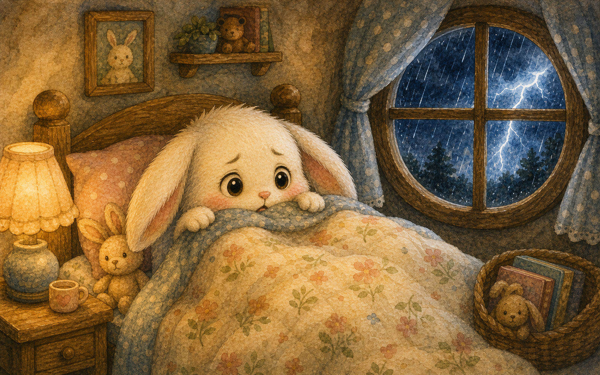
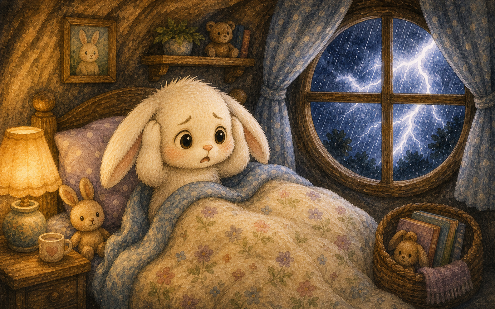
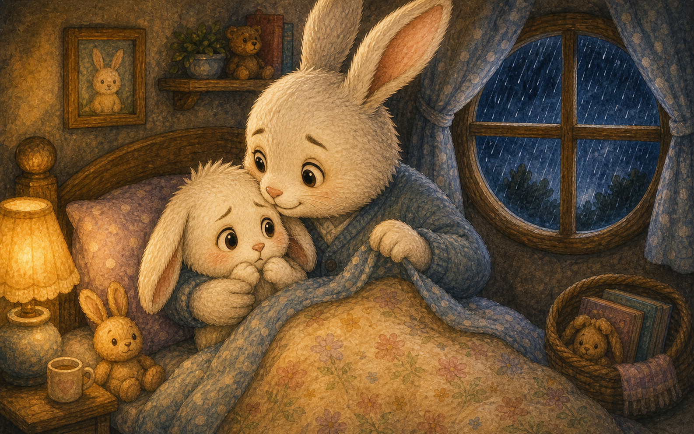
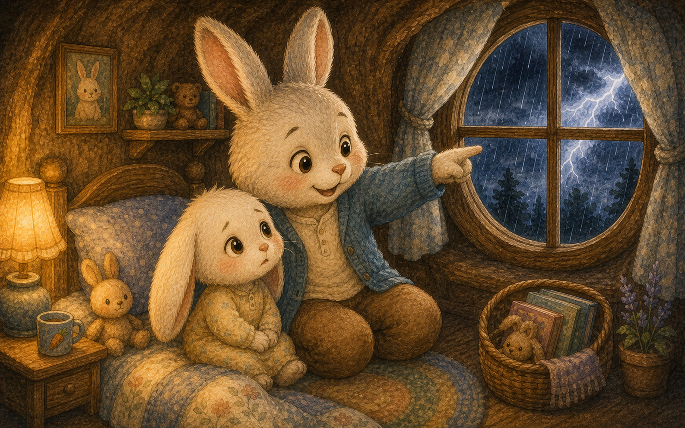
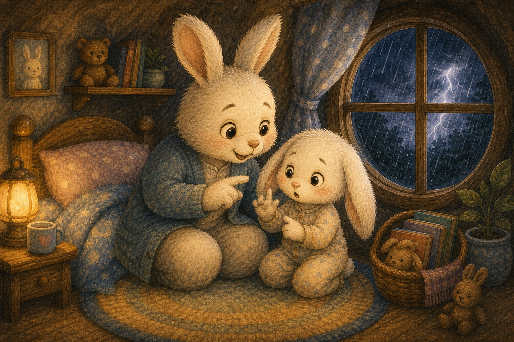
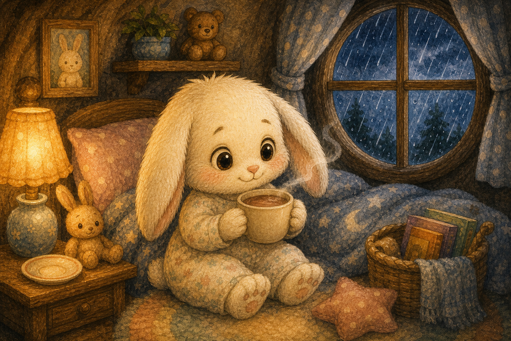
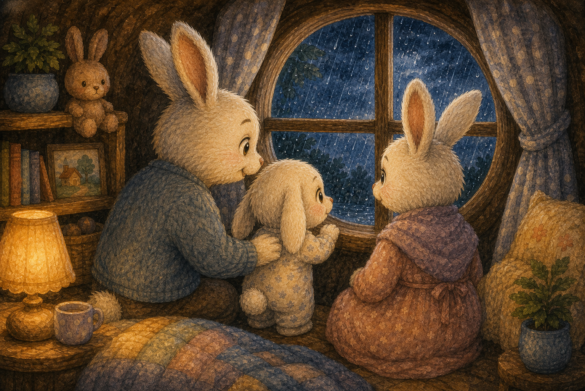
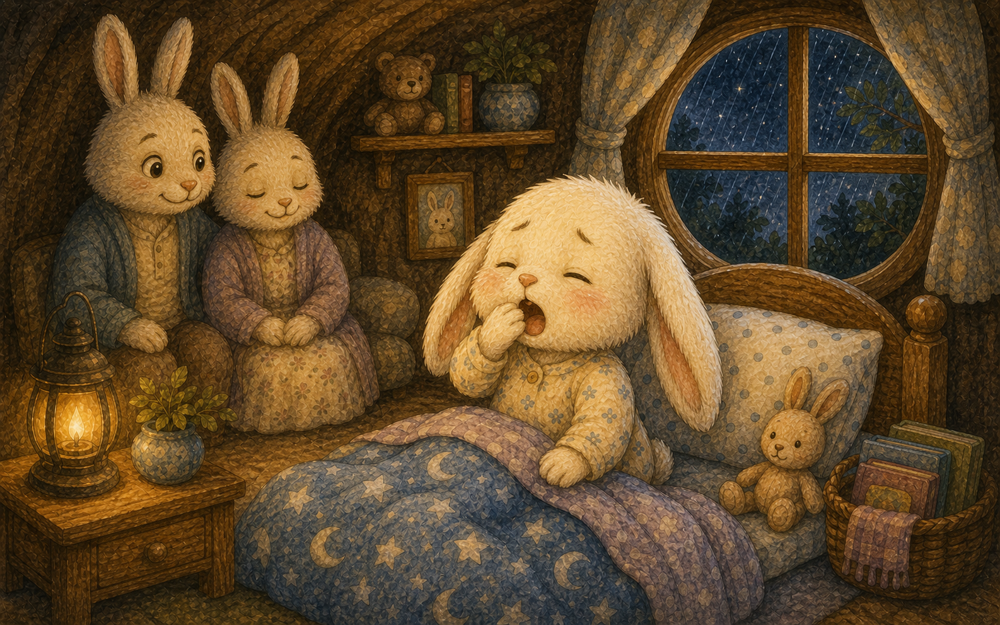
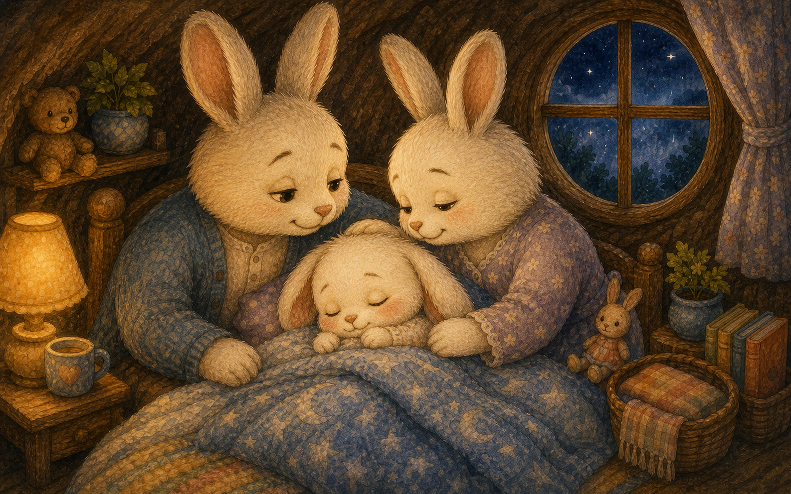
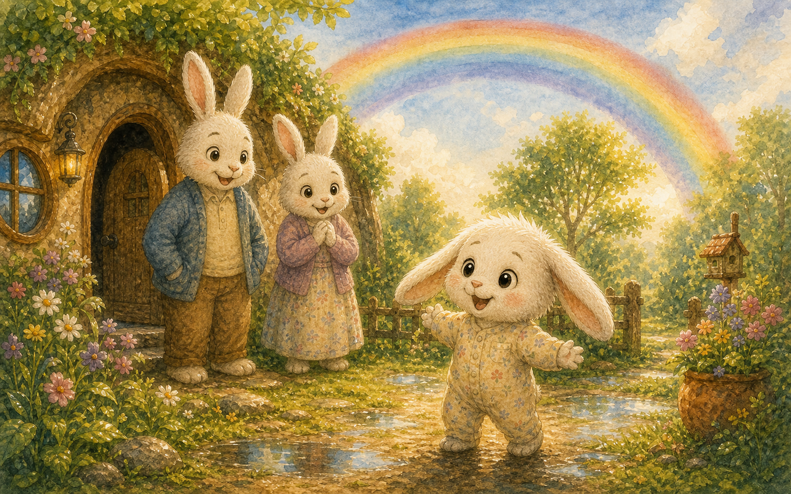

우르릉 쾅!
밤하늘에서 천둥이 우르릉 쾅 울렸어요. 아기 토끼 솜이는 깜짝 놀라 이불 속으로 쏙 숨었지요.
"천둥은 너무 무서워!"

밤하늘에서 천둥이 우르릉 쾅 울렸어요. 아기 토끼 솜이는 깜짝 놀라 이불 속으로 쏙 숨었지요.
"천둥은 너무 무서워!"

창밖으로 번개가 번쩍번쩍 빛났어요. 빗방울이 창문을 토독토독 두드렸답니다.
솜이는 귀를 꼭 막았어요.

아빠 토끼가 이불을 살짝 들추고 솜이를 꼭 안아 주었어요. 따뜻한 품에 솜이의 떨림이 조금 멎었지요.
"아빠가 옆에 있으니 괜찮아."

아빠는 천둥은 구름이 박수를 치는 소리라고 알려 주었어요. 소리는 크지만 우리를 해치진 않는다고요.
"구름이 신나서 손뼉을 치는 거란다."

아빠는 번쩍한 뒤 하나, 둘, 셋 세어 보자고 했어요. 숫자를 세는 동안 천둥은 점점 멀어졌지요.
"세어 보니까 덜 무서워!"

엄마가 따뜻한 코코아를 한 잔 가져다주었어요. 손이 따뜻해지자 마음도 보들보들해졌답니다.
비 오는 밤만의 포근함이 있었어요.

솜이는 가족과 함께 창가에서 비를 바라보았어요. 빗물이 마른 땅을 촉촉이 적시고 있었지요.
"비가 와서 꽃들이 좋아하겠다."

천둥소리가 점점 작아지며 멀리 사라졌어요. 솜이는 어느새 하품을 쩌억 했답니다.
무섭던 마음이 스르르 풀렸어요.

솜이는 가족 곁에서 편안히 잠이 들었어요. 빗소리가 부드러운 자장가가 되어 주었지요.
이제 천둥도 무섭지 않았답니다.

아침이 되자 하늘에는 커다란 무지개가 떴어요. 솜이는 무서운 밤 뒤에 예쁜 선물이 온다는 걸 알았답니다.
"무서운 밤이 지나면 무지개가 와!"